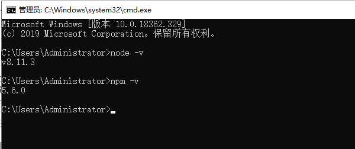
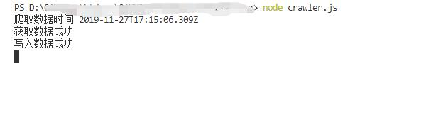
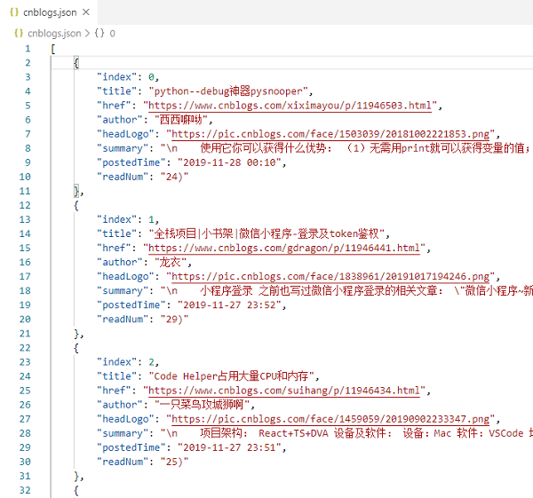
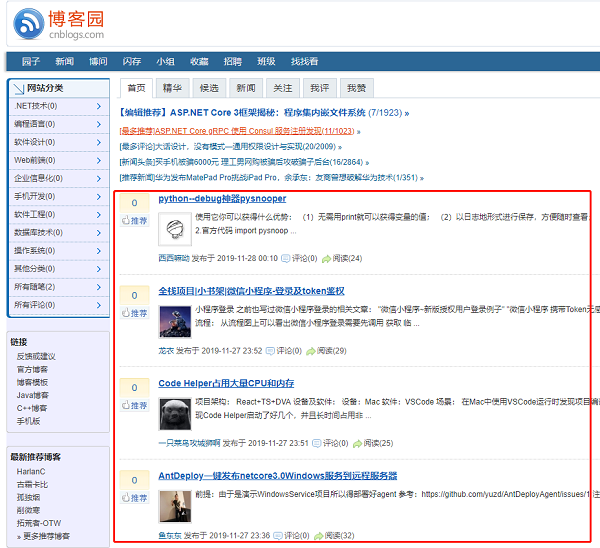

网络爬虫（又称为网页蜘蛛，网络机器人，在FOAF社区中间，更经常的称为网页追逐者），是一种按照一定的规则，自动地抓取万维网信息的程序或者脚本。另外一些不常使用的名字还有蚂蚁、自动索引、模拟程序或者蠕虫。
我们可以使用网络爬虫对数据信息进行自动采集，比如应用于搜索引擎中对站点进行爬取收录，应用于数据分析与挖掘中对数据进行采集，应用于金融分析中对金融数据进行采集，除此之外，还可以将网络爬虫应用于舆情监测与分析、目标客户数据的收集等各个领域。
网络爬虫按照系统结构和实现技术，大致可以分为以下几种类型：通用网络爬虫（General Purpose Web Crawler）、聚焦网络爬虫（Focused Web Crawler）、增量式网络爬虫（Incremental Web Crawler）、深层网络爬虫（Deep Web Crawler）。 实际的网络爬虫系统通常是几种爬虫技术相结合实现的，下面分别对这几种爬虫加以简单的介绍。
1.1、通用网络爬虫
又称全网爬虫（Scalable Web Crawler），爬行对象从一些种子URL扩充到整个Web，主要为门户站点搜索引擎和大型Web服务提供商采集数据。
1.2、聚焦网络爬虫
又称主题网络爬虫（Topical Crawler），是指选择性地爬行那些与预先定义好的主题相关页面的网络爬虫。 和通用网络爬虫相比，聚焦爬虫只需要爬行与主题相关的页面，极大地节省了硬件和网络资源，保存的页面也由于数量少而更新快，还可以很好地满足一些特定人群对特定领域信息的需求。
1.3、增量式网络爬虫
指对已下载网页采取增量式更新和只爬行新产生的或者已经发生变化网页的爬虫，它能够在一定程度上保证所爬行的页面是尽可能新的页面。。
1.4、深层网络爬虫
Web 页面按存在方式可以分为表层网页（Surface Web）和深层网页（Deep Web，也称 Invisible Web Pages 或 Hidden Web）。表层网页是指传统搜索引擎可以索引的页面，以超链接可以到达的静态网页为主构成的Web 页面。Deep Web是那些大部分内容不能通过静态链接获取的、隐藏在搜索表单后的，只有用户提交一些关键词才能获得的Web页面。
对以上几种爬虫进行简单的了解后，下面来实现一个简单的爬虫小应用吧。
2.1、实现目标
提到爬虫，大概率会想到大数据，从而又联想到Python，百度了以下，Python做爬虫的确实比较多。由于自己主要做前端开发这块，相对来说，JavaScript更熟练简单一点。实现一个小目标，那就用NodeJS来对博客园（自己常用的一个开发者网站）首页文章列表进行爬取，然后写入到本地JSON文件中。
2.2、环境搭建
NodeJS安装完毕，打开命令行，可用node -v检测NodeJS是否安装成功，可用npm -v检测NodeJS是否安装成功，安装成功应该会打印以下信息（因版本不同而异）：

2.3、具体实现
2.3.1、安装依赖包
在目录下执行npm install superagent cheerio --save-dev安装superagent，cheerio这两个依赖包。创建一个crawler.js文件。
superagent：SuperAgent是一个轻量级、灵活的、易读的、低学习曲线的客户端请求代理模块，使用在NodeJS环境中。
cheerio: cheerio是专为服务器设计的核心jQuery的快速，灵活和精益实现。它可以像jquery一样操作字符串。
// 导入依赖包
const http = require("http");
const path = require("path");
const url = require("url");
const fs = require("fs");
const superagent = require("superagent");
const cheerio = require("cheerio");2.3.2、爬取数据
接着get请求页面，在获取到页面内容后，对返回的DOM根据自己想要的数据进行解析取值，最后把处理后的结果JSON转译成字符串保存到本地。
//爬取页面地址
const pageUrl="https://www.cnblogs.com/";
// 解码字符串
function unescapeString(str){
if(!str){
return ''
}else{
return unescape(str.replace(/&#x/g,'%u').replace(/;/g,''));
}
}
// 抓取数据
function fetchData(){
console.log('爬取数据时间节点：',new Date());
superagent.get(pageUrl).end((error,response)=>{
// 页面文档数据
let content=response.text;
if(content){
console.log('获取数据成功');
}
// 定义一个空数组来接收数据
let result=[];
let $=cheerio.load(content);
let postList=$("#main #post_list .post_item");
postList.each((index,value)=>{
let titleLnk=$(value).find('a.titlelnk');
let itemFoot=$(value).find('.post_item_foot');
let title=titleLnk.html(); //标题
let href=titleLnk.attr('href'); //链接
let author=itemFoot.find('a.lightblue').html(); //作者
let headLogo=$(value).find('.post_item_summary a img').attr('src'); //头像
let summary=$(value).find('.post_item_summary').text(); //简介
let postedTime=itemFoot.text().split('发布于 ')[1].substr(0,16); //发布时间
let readNum=itemFoot.text().split('阅读')[1]; //阅读量
readNum=readNum.substr(1,readNum.length-1);
title=unescapeString(title);
href=unescapeString(href);
author=unescapeString(author);
headLogo=unescapeString(headLogo);
summary=unescapeString(summary);
postedTime=unescapeString(postedTime);
readNum=unescapeString(readNum);
result.push({
index,
title,
href,
author,
headLogo,
summary,
postedTime,
readNum
});
});
// 数组转换为字符串
result=JSON.stringify(result);
// 写入本地cnblogs.json文件中
fs.writeFile("cnblogs.json",result,"utf-8",(err)=>{
// 监听错误，如正常输出，则打印null
if(!err){
console.log('写入数据成功');
}
});
});
}
fetchData();3.1、生成结果
在项目目录下打开命令行输入node crawler.js,

会发现目录中会创建一个cnblogs.json文件，打开文件如下：

打开博客园首页对比下：

发现成功爬到了首页想要的文章列表
3.2、定时爬取
发现只有每执行一次才能获取到数据，价格定时器，让它每隔五分钟自动爬取一次，代码如下：
···
// 每隔5分钟请求一次
setInterval(()=>{
fetchData()
},5*60*1000);
···网络爬虫的应用远远不止这些，以上只是对网络爬虫做了一个简单的介绍，并实现了一个小demo，如有不足，欢迎指正。
参考资料：
https://baike.baidu.com/item/%E7%BD%91%E7%BB%9C%E7%88%AC%E8%99%AB/5162711
https://blog.csdn.net/zw0Pi8G5C1x/article/details/89078072
https://www.jianshu.com/p/1432e0f29abd
https://www.jianshu.com/p/843ade9bf6df